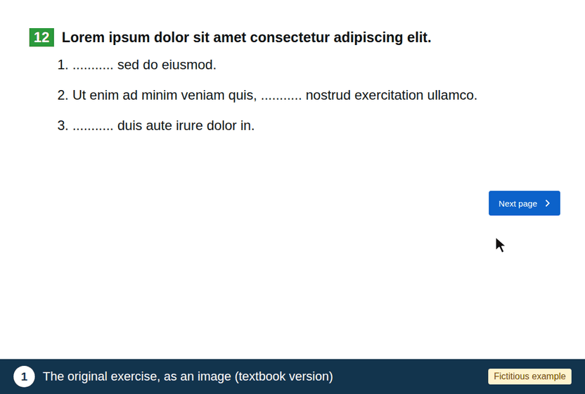

Rating the adapted exercises
You will rate 16 exercises, shown in random order. Put yourself in the shoes of a child with DCD.
In the animation (dummy content), follow the 3 steps in the blue banner:
There are no right or wrong answers, and what you do in the exercise is not recorded. You will not be able to go back to previous pages.
